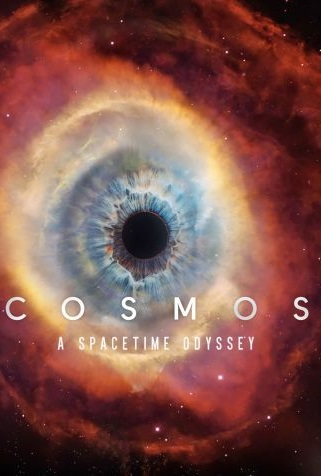

Cosmos

Ano: 2014
Duração: 44 min
Gênero: Documentário Científico
Diretor: Brannon Braga, Bill Pope, Ann Druyan
Elenco: Neil deGrasse Tyson
Sinopse: Série de TV de 1980 com 13 episódios que abriu a janela do Universo para mais de 500 milhões de pessoas, o segredo foi a carisma e o talento de comunicação de Carl Sagan, que fora capaz de desmitificar o que até então era informação científica inacessível